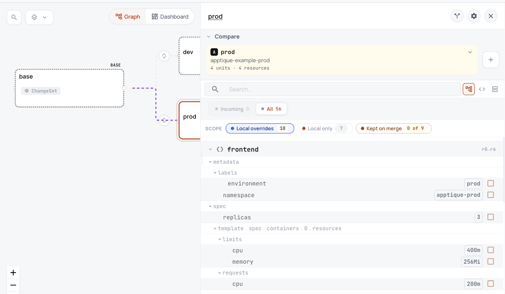

1. See what you have today
The example keeps one base and two overlays in confighub/examples. Each overlay changes the base with its own namespace, label, image tag and patches.
| File | What it holds |
|---|---|
base/deployment.yaml | the Deployment frontend |
base/kustomization.yaml | lists the base objects and the labels every object gets |
base/service.yaml | the Service frontend and the ServiceAccount frontend |
dev/kustomization.yaml | sets the namespace, the environment label and the image tag, and patches the Deployment |
dev/namespace.yaml | the Namespace apptique-dev |
prod/kustomization.yaml | sets the namespace, the environment label and the image tag, and patches the Deployment |
prod/namespace.yaml | the Namespace apptique-prod |
Nothing in these files says what prod runs. You find out by building it.
2. See what the Workshop gives you
Each overlay builds into one flat file of 4 objects: 1 Namespace, 1 ServiceAccount, 1 Service, 1 Deployment. The Workshop's check reads each one.
$ kustomize build dev > dev.yaml
$ cub config check dev.yaml
Config: dev
Inspecting local Kubernetes objects (static, no infrastructure)
Installs
4 objects: 1 Deployment, 1 Namespace, 1 Service, 1 ServiceAccount
namespaces that must already exist: none
Lifecycle work
[PASS] CRDs: 0
[PASS] Helm hooks: 0
[PASS] setup Jobs: 0
[PASS] admission webhooks needing a certificate: 0
[PASS] images tagged latest or not tagged: 0
Schema
[PASS] schema validation: 4 object(s) valid against the default and ecosystem catalogs (flux-schema/0.16.0)
Free look before you install. Compose it into a cub stack, or run it as a cub app.$ kustomize build prod > prod.yaml
$ cub config check prod.yaml
Config: prod
Inspecting local Kubernetes objects (static, no infrastructure)
Installs
4 objects: 1 Deployment, 1 Namespace, 1 Service, 1 ServiceAccount
namespaces that must already exist: none
Lifecycle work
[PASS] CRDs: 0
[PASS] Helm hooks: 0
[PASS] setup Jobs: 0
[PASS] admission webhooks needing a certificate: 0
[PASS] images tagged latest or not tagged: 0
Schema
[PASS] schema validation: 4 object(s) valid against the default and ecosystem catalogs (flux-schema/0.16.0)
Free look before you install. Compose it into a cub stack, or run it as a cub app.3. See every field that differs
These are all the differences between the two builds, and nothing else differs.
| Field | dev | prod | On |
|---|---|---|---|
metadata.labels.environment | dev | prod | Namespace, ServiceAccount/frontend, Service/frontend, Deployment/frontend |
metadata.name | apptique-dev | apptique-prod | Namespace |
metadata.namespace | apptique-dev | apptique-prod | ServiceAccount/frontend, Service/frontend, Deployment/frontend |
spec.replicas | 1 | 3 | Deployment/frontend |
spec.template.spec.containers[0].image | ghcr.io/confighub/apptique-frontend:v1.4.0 | ghcr.io/confighub/apptique-frontend:v1.3.0 | Deployment/frontend |
spec.template.spec.containers[0].resources.limits.cpu | 200m | 400m | Deployment/frontend |
spec.template.spec.containers[0].resources.limits.memory | 128Mi | 256Mi | Deployment/frontend |
spec.template.spec.containers[0].resources.requests.cpu | 100m | 200m | Deployment/frontend |
spec.template.spec.containers[0].resources.requests.memory | 64Mi | 128Mi | Deployment/frontend |
4. Try it yourself, with no account
Install cub and the Workshop plugin, and kustomize, first.
# fetch the example at the commit this page was built from
$ git clone https://github.com/confighub/examples.git && git -C examples checkout 7f1b8f2fc849bb6488bc2c58f1469172018fc9dd
$ cd examples/gitops/argo/intermediate-ci-to-gitops/gitops-repo/environments/apptique
# build each overlay flat
$ kustomize build dev > dev.yaml && kustomize build prod > prod.yaml
$ cub config check prod.yamlSee it live in ConfigHub
Everything above runs on your own machine with no account. To see the same example in ConfigHub, load it into your own organization with the commands below.
With your own account
The Guide Review one change before it ships loads this same app into ConfigHub as one base with a dev and a prod variant. A recorded run of it checked that what ConfigHub held for prod matched this prod build.
What it looks like in ConfigHub

5. Technical notes and disclaimers
- The builds and checks ran on 2026-10-26 with kustomize v5.8.1, cub v0.9.0 and Workshop plugin 0.6.60, from the files on this page. The recorded files and their receipt hold every input and output.
cub config diff dev.yaml prod.yamlreports every object as added or removed, because the namespace is part of an object's name. The table compares objects by kind and name instead.- The example's own promotion record,
PROMOTED_FROM.md, is not a Kubernetes object and is not on this page.